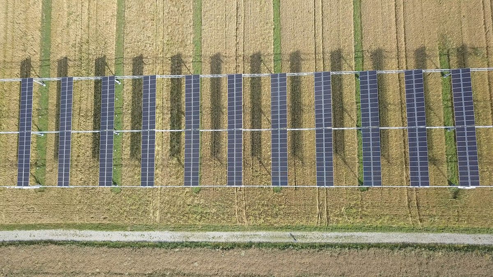
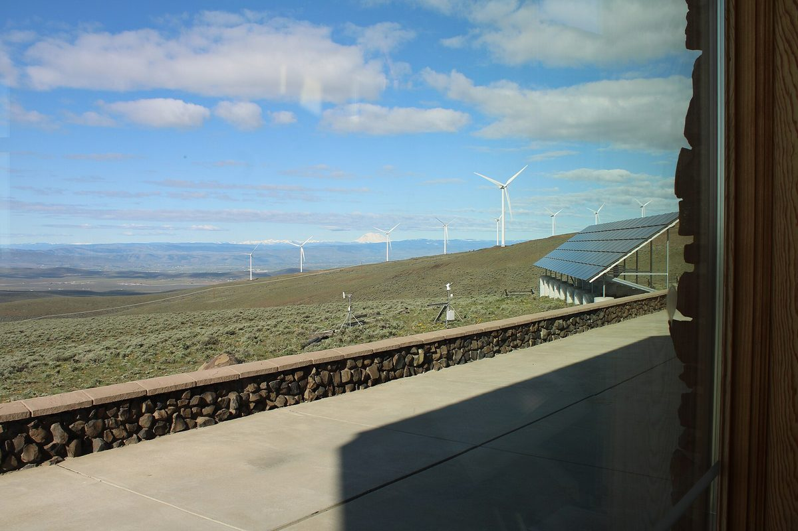
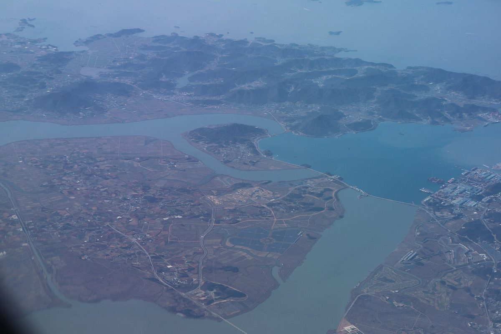
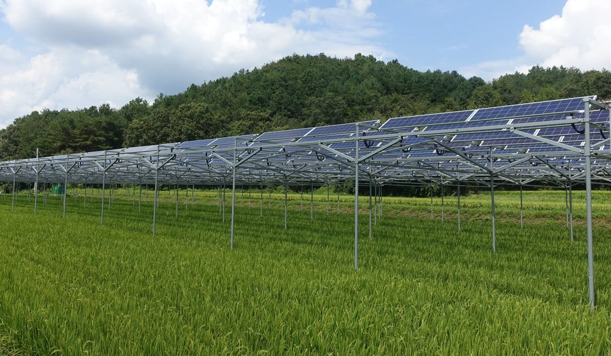

산업
보성농협 조합장, 영농형 태양광 걸림돌로 담보 대출·고령 주민 자부담 꼽아…농협이 자부담 맡는 방식 언급
농협이 7년 전 설치한 벼농사 영농형 태양광 현장…선로 확보·햇빛마을 금융지원·규제 개선이 과제로

마이크로소프트, 한국 반도체 공급업체에 한국 안에서 무탄소 전력 조달 요구
브룩필드 한 곳과 10.5GW 등 전 세계 재생에너지 설비 40GW 계약…한국 재생에너지 발전 비중은 10% 안팎으로 세계 평균의 3분의 1에도 못 미쳐

내년 RPS 대신할 재생에너지 새 계약시장, 해상풍력 투자·주민참여 사업 수익성 쟁점…REC 가중치 역할 이어받을지가 관건
정부가 발전원별 물량·상한가격 제시 뒤 경쟁입찰·한전 장기 고정가격 계약…해상풍력 단가 kWh당 330원대에서 2035년 150원 이하 목표, 업계는 먼바다 비용 반영 요구

햇빛소득마을은 늘리는데 주민참여 REC 가중치는 내년 종료…우대가격 수준은 아직 미정
정부 목표 올해 700곳·2030년 3천곳 이상…전남광주 125곳 선정, 경과 규정으로 일부는 새 제도 밖

서부발전, 대전 산업단지 공장 지붕에 태양광 13MW 이상…20년 운영하며 수익 일부 지역 환원
산단 에너지자급자족 사업 협약, 입주기업 20곳 이상 고효율 설비 교체 지원…군산 산단 11.69MW에 이어 두 번째

전남도, 내부 검토서 영농형 수익 40% 감소 예상하고도 해남 부동지구 1GW 태양광 추진
사업비 1조7,840억 원, 솔라시도 산단·데이터센터 전력 공급 구상…농지 사용 승인 3년 넘도록 방식·사업자 못 정해

영농형 태양광 농가 예상 순수익, 1년 새 999만 원에서 624만 원으로…37% 낮아져
100kW 기준 농식품부·영농형태양광협회 추정…발전 매출 2,256만 원→1,950만 원, 설치비 1억5,500만 원→1억7,000만 원, 12월 특별법 시행 앞둬

産業
宝城農協の組合長、営農型太陽光の壁に担保融資と高齢住民の自己負担を挙げる…農協が自己負担を担う方式に言及
農協が7年前に設置した稲作の営農型太陽光の現場…送電線の確保、太陽光村への金融支援、規制改善が課題に
マイクロソフト、韓国の半導体サプライヤーに韓国国内でのカーボンフリー電力調達を要求
ブルックフィールド1社と10.5GWなど世界で再エネ設備40GWを契約…韓国の再エネ発電比率は10％前後で世界平均の3分の1にも届かず
来年RPSに代わる再エネの新契約市場、洋上風力投資と住民参加事業の収益性が争点…REC加重値の役割を引き継げるかが鍵
政府が電源別の導入量と上限価格を示した後に競争入札・韓電と長期固定価格契約…洋上風力の発電単価を1kWh当たり330ウォン台から2035年150ウォン以下に下げる目標、業界は遠い海のコスト反映を求める
太陽光所得村は増やすのに住民参加のREC加重値は来年終了…優遇価格の水準はまだ未定
政府目標は今年700カ所・2030年に3,000カ所以上…全南光州は125カ所を選定、経過規定で一部は新制度の対象外
西部発電、大田の産業団地の工場屋根に太陽光13MW以上…20年運営し収益の一部を地域に還元
産業団地エネルギー自給自足事業で協約、入居企業20社以上の高効率設備への更新を支援…群山産業団地11.69MWに続き2カ所目
全羅南道、内部検討で営農型の収益40％減を予想しながら海南・富洞地区1GW太陽光を推進
事業費1兆7,840億ウォン、ソラシド産業団地・データセンターへの電力供給を構想…農地使用承認から3年を過ぎても方式・事業者は未定
営農型太陽光の農家予想純収益、1年で999万ウォンから624万ウォンへ…37％低下
100kW基準で農林畜産食品部・営農型太陽光協会が推計…発電売上2,256万ウォン→1,950万ウォン、設置費1億5,500万ウォン→1億7,000万ウォン、12月の特別法施行を控え
产业
明年取代RPS的可再生能源新合同市场引发海上风电投资与居民参与项目收益争议，关键在于能否接替REC权重的作用
政府公布各电源装机量和上限价格后进行竞争招标，中标者与韩电签订长期固定价格合同…目标将海上风电成本从每kWh 330韩元级降至2035年150韩元以下，业界要求反映远海成本
西部发电在大田产业园区工厂屋顶建设13MW以上太阳能，运营20年并将部分收益回馈地方
签署产业园区能源自给自足项目协议，支持20多家入驻企业更换高效设备；继群山产业园区11.69MW之后的第二个项目
韩国农光互补农户预期净收益一年内从999万韩元降至624万韩元，降幅37%
农林畜产食品部与农光互补协会按100kW估算，发电收入2,256万韩元降至1,950万韩元，安装费由1.55亿韩元升至1.7亿韩元，特别法将于12月施行
Industry
Boseong co-op head cites collateral and elderly residents' upfront costs as barriers to agrivoltaics, floats the co-op covering their share
At a rice-paddy agrivoltaic plant the agricultural cooperative installed seven years ago, grid lines, financing for solar villages and deregulation are named as tasks
Microsoft asks Korean chip suppliers to source carbon-free power within Korea
The company has contracted 40 GW of renewable capacity worldwide, including 10.5 GW with Brookfield alone, while renewables supply only around 10% of Korea's electricity, less than a third of the global average
Korea's new renewable contract market replacing the RPS next year puts offshore wind investment and resident-participation returns in question, with much riding on whether it takes over the role of REC multipliers
Government will set volumes and price caps by technology, followed by competitive auctions and long-term fixed-price contracts with KEPCO; target to cut offshore wind costs from around 330 won per kWh to below 150 won by 2035, while industry wants far-offshore costs reflected
Korea expands Sunlight Income Villages but ends REC weighting for resident investment next year, with preferential price still undecided
Government targets 700 villages this year and over 3,000 by 2030; 125 selected in Jeonnam-Gwangju, some exempt under transition rules
Korea Western Power to put 13MW-plus of solar on Daejeon industrial park roofs, returning part of 20 years of revenue locally
Industrial park energy self-sufficiency agreement also supports efficiency upgrades at 20-plus tenant firms; second such project after 11.69MW at Gunsan
South Jeolla pushes 1 GW solar project on Haenam's Budong reclaimed land despite internal review projecting 40% lower agrivoltaic returns
1.784 trillion won project would supply Solaseado industrial complex and data centers, but more than three years after farmland-use approval the model and developer remain undecided
Expected net income for Korean agrivoltaic farms falls 37% in a year, from 9.99 million to 6.24 million won
Agriculture ministry and agrivoltaics association estimate for 100 kW: generation revenue down from 22.56 million to 19.5 million won, installation cost up from 155 million to 170 million won, as special act takes effect in December